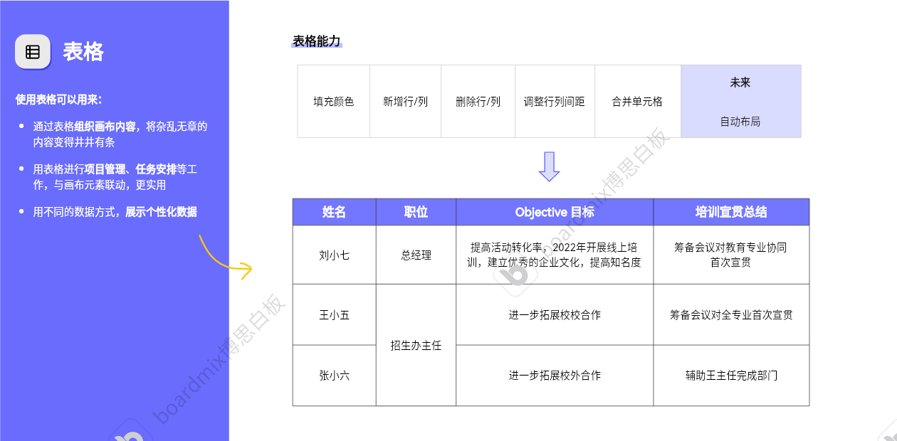

一、简介
博思白板boardmix是国内前沿的在线协作白板工具，集成了AI、思维导图、流程图、PPT、文档笔记和看板等创作能力，打通成员之间进行灵感采集、思考、创作、管理、演示、协作的全链路。 适用于教育、企业会议、创意设计、项目管理等场景。通过智能化和实时协作，简化信息整理与创意表达流程。
二、安装指南
请访问官方网站下载并安装最新版本的博思白板。
应用支持
三、主要功能
四、基本操作
主界面
博思白板的功能承载在一张无限大小的画布上，用户点击工具栏图标，拖动相关元素到画布上实现绘图创作，操作与PPT类似。
软件界面：
- 菜单栏：基本设置，导入、导出文件，搜索功能
- 工具栏：容器、形状、文本、连接线、画笔、卡片
- 扩展栏：演示工具、评论、沟通、消息通知
- 辅助工具栏：AI工具、状态、历史记录
指针选择/手型拖动工具
画笔/橡皮擦
文本

连接线
图形
容器
表格
插入图片/文件

路线图
快捷键
五、高级功能
AI助手
主界面右下角点击AI助手标志展开AI助手界面，可以像豆包、千问、DeepSeek模型一样对话，帮助生成大纲、图片、模型，提升工作效率。
六、常见问题解答
优缺点
本人现使用的是免费版，个人空间最多建立3个文件，空间十分有限。每个文件最多使用150个元素，多了无法添加，需要会员；
图形使用上，基本图形满足大部分需求。另外，流程图、UML图、实体关系图、数据流图可以免费使用。作为日常建模、报告使用是方便的；
相较于ppt，这款软件的白板画布可以无限延申，元素可以随意放置，不局限在4:3或者16:9；
元素组成可以模块化，设置路线图导航连接。专注于内容建设，不必在意具体位置；
快捷键功能多，绘图流畅；
七、实践案例
以设计院后勤管理平台作为案例，绘制了c4模型架构(部分)
使用的工具有基础图形、文本、容器、连接线以及素材库